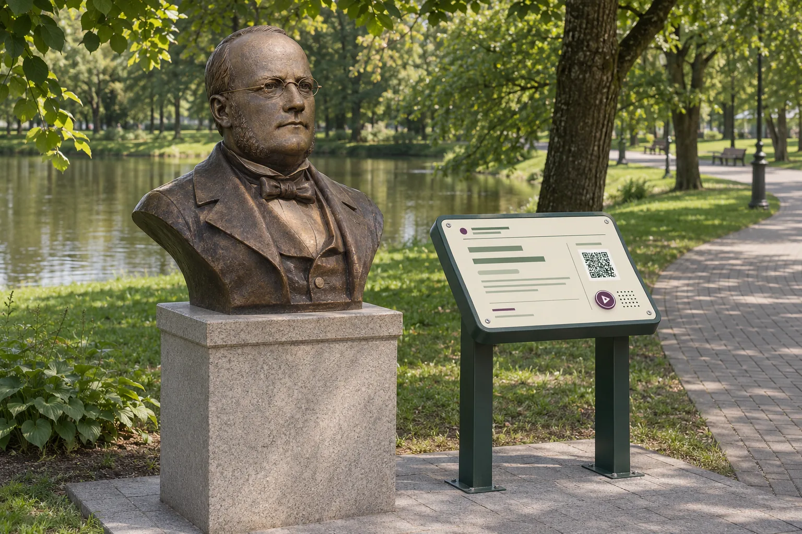
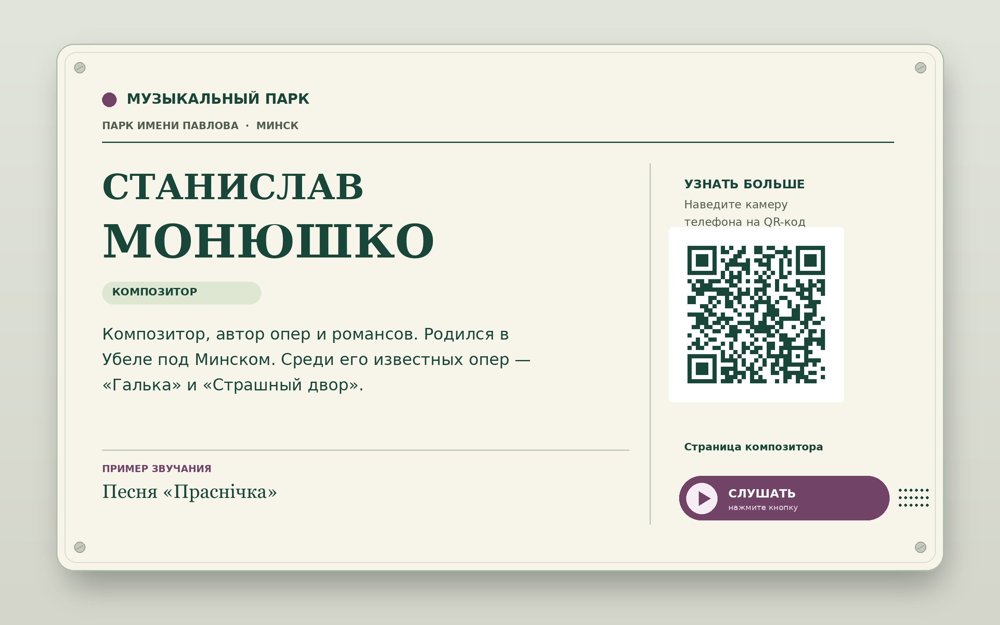

Бюст
Остановка на маршруте, посвящённая одному композитору.
Минск · Парк имени Павлова
Прогулка у воды, где можно познакомиться с композиторами и услышать их музыку.
Узнать о маршрутеИдея проекта
Предлагаем разместить вдоль прогулочных дорожек вокруг водной части парка имени Павлова бюсты композиторов, связанных с музыкальной культурой Беларуси.
Рядом с каждым бюстом установят информационную табличку с кратким рассказом о композиторе и QR-кодом для открытия страницы о нём на мобильном устройстве. При нажатии на кнопку у бюста запись его произведения зазвучит из встроенного динамика.
Остановка на маршруте, посвящённая одному композитору.
Имя, краткая биография и QR-код со ссылкой на страницу композитора.
Нажмите кнопку у бюста, чтобы услышать запись произведения через встроенный динамик.


Предлагаемая локация
Для маршрута рассматривается западная часть парка имени Павлова в Московском районе Минска. Бюсты предлагается разместить вдоль дорожек вокруг водной части парка.
При выборе места авторы проекта опирались на идею «Сад музыки» из материалов «Минской смены — 2025».
Открыть парк на карте
Музыкальное наследие
Имена из предварительного списка проекта.
По этому запросу ничего не найдено.